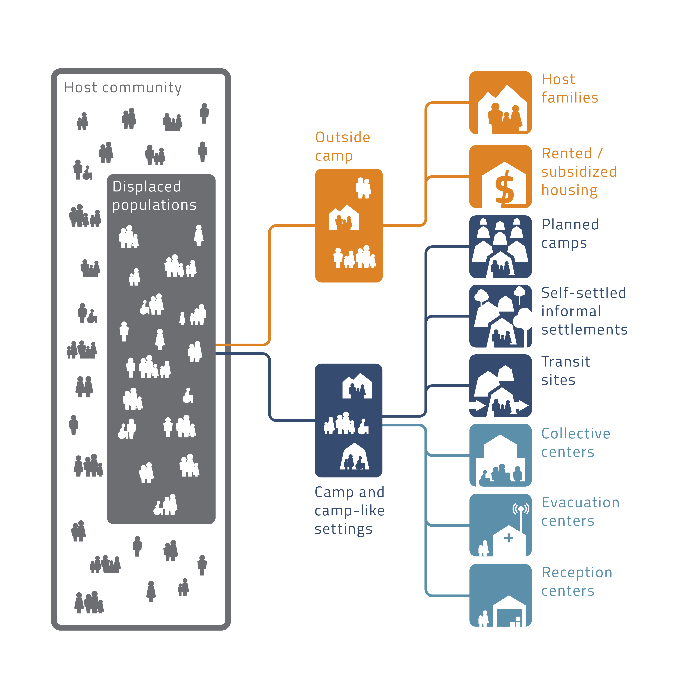
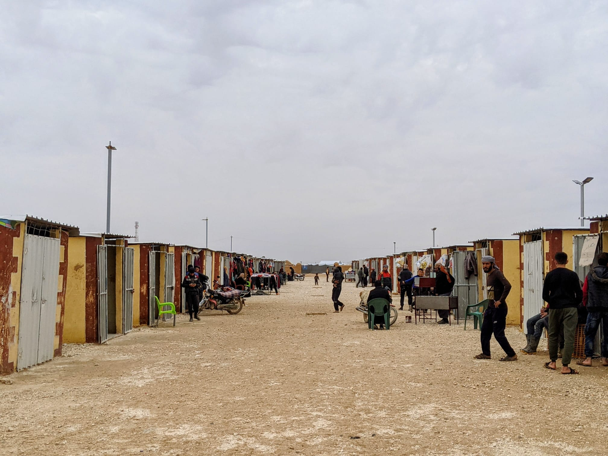

About
The Minimum Standards for Camp Management describe the minimum actions needed to support meaningful engagement within a site as well as planning and coordination between sectors and agencies. The Standards are based on the fundamental belief that the rights of displaced persons must be respected, and their needs met in a way that supports their dignity.
Vision
The Minimum Standards in Camp Management aim to clarify the role of any site management agency working daily in humanitarian settings and to set out minimum levels of quality for that work.
Application

Although called the Minimum Standards for Camp Management, the guidance can be applied to all contexts where displaced people seek shelter, protection and other support, and the term “site” is used unless a specific camp context is meant.
The primary audience for these standards are site managers and their teams, however they may also be useful for planners, policy makers, technical specialist, donors, academics and those working on advocacy, media or communication. The generic term site management agency (SMA) has been used however throughout the document. Recognizing that several factors will influence how the standards can be applied in the operating environment to support the right to life with dignity. The setting in which humanitarian response is being delivered;- The differences across populations and diversity among people;
- The operational and logistical realities that will affect how and what kind of humanitarian response is delivered; and
- The baselines and indicators that are appropriate to the context – with key terms defined and targets set.

History
The need for a set of standards to measure the quality of work done by an SMA was first recognized in 2002, resulting in the Camp Management Toolkit. The Minimum Standards in Camp Management was the result of field practitioners and expert advice from around the world who reflected the diversity and specificity needed in managing displacement sites. They represent the first set of agreement on common standards and policies to address the rights of all displaced persons in a way that supports dignity.
Events
The CCCM Cluster will be launching the Minimum Standards in two additional languages; French and Spanish, in
2022.
Le groupe sectoriel de la coordination et de la gestion des camps lancera les normes minimales (pour la
gestion des camps) dans les langues suivantes en 2022.
El Clúster CCCM lanzará las Normas mínimas en los siguientes idiomas en 2022
Contact
Jennifer Cline Kvernmo – jkvernmo@iom.int and Thomas Stork – thomas.sortk@drc.ngo Co-chairs of the CCCM Working Group on Minimum Standards.